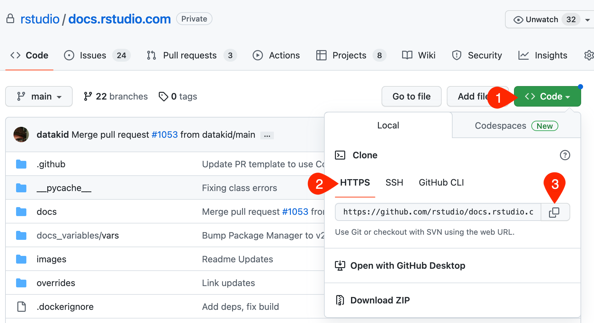
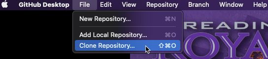
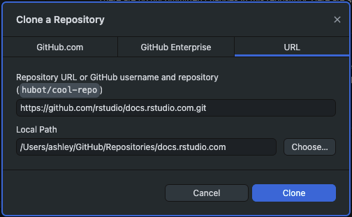
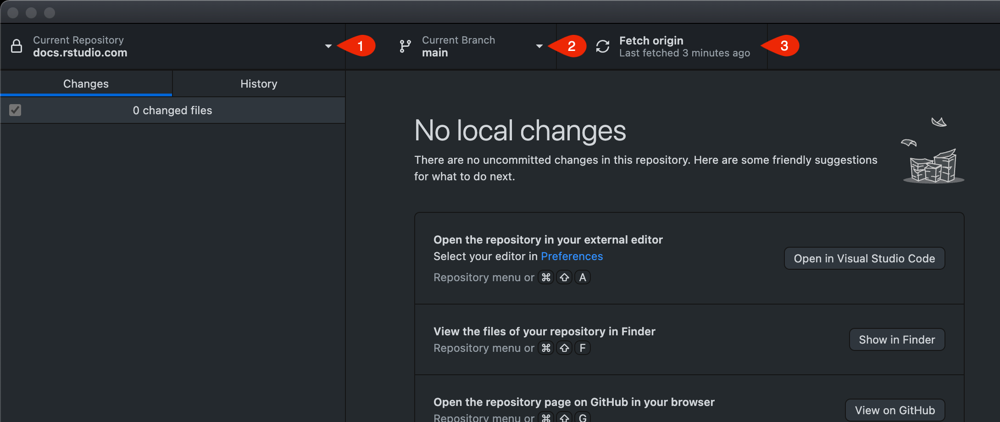
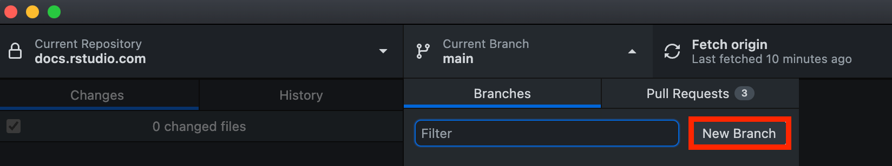
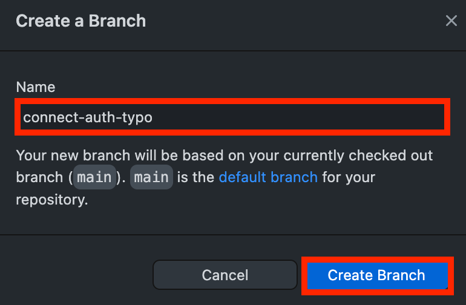

Cloning a Repository
These procedures are for MacOS.
This documentation walks you through pulling a remote repository, pulling changes from main, and creating a branch.
Prerequisites
- The following instructions use GitHub Desktop.
- Access to the docs.rstudio.com repo (Contact Ashley Henry for access requests)
Clone via HTTPS
- Navigate to: https://github.com/rstudio/docs.rstudio.com
- Copy the URL: 
- Open GitHub Desktop.
- From the File menu, click Clone Repository…: 
- Do the following:
- In the Repository URL or GitHub username and repository field, paste the URL that you copied in Step 2. 
- In the Local Path field, either paste, type, or Choose… a location for the cloned repo.
- Click Clone.
A best practice is to create a local GitHub/Repositories dirctory (folder) and save all individual cloned repositories to that folder.
Once all the repository has been cloned locally, you now have local access to all of the directories and files that live in the upstream repo.
Pull main
Now that you have cloned the repository, let’s make sure that you are synced with the main branch.
Do the following:

- From the GitHub Desktop app, verify that the branch that you cloned is selected from the Current Repository drop-down menu.
- From the Current Branch drop-down menu, select
main. - Click Fetch origin.
If main has changes that you do not have locally, the Fetch origin button will display a Pull option with a count of the number of changes that you are behind main. Go ahead and click that button to pull the latest changes to sync with themain` upstream branch.
Create a branch
- Open GitHub Desktop.
- Click the Current Branch drop-down menu and select New Branch. 
- Add a name for your branch and click Create Branch. 
Your new branch is automatically selected in the Current Branch drop-down menu.
When you make a local change, you can commit the change, publish/push changes upstream to your branch in GitHub.